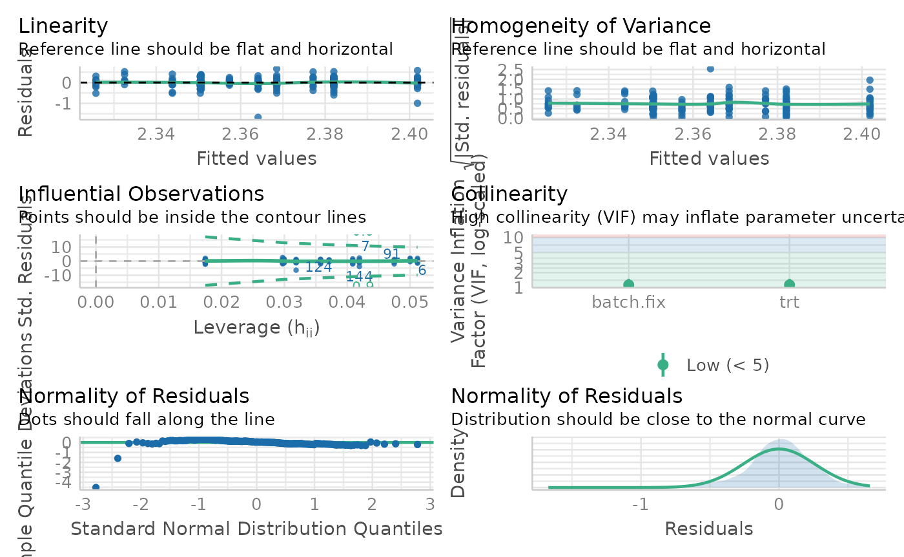
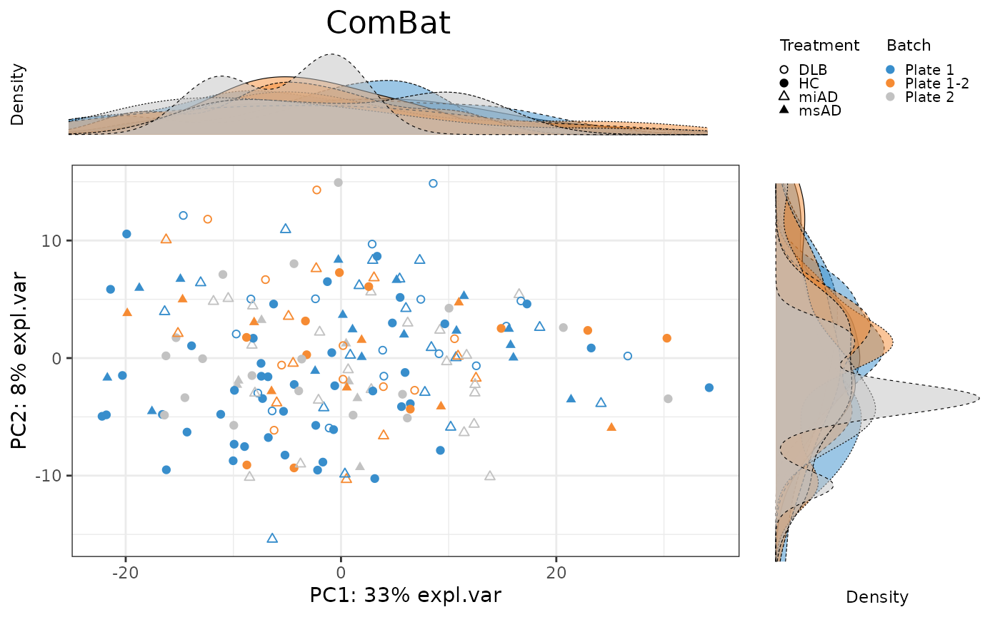
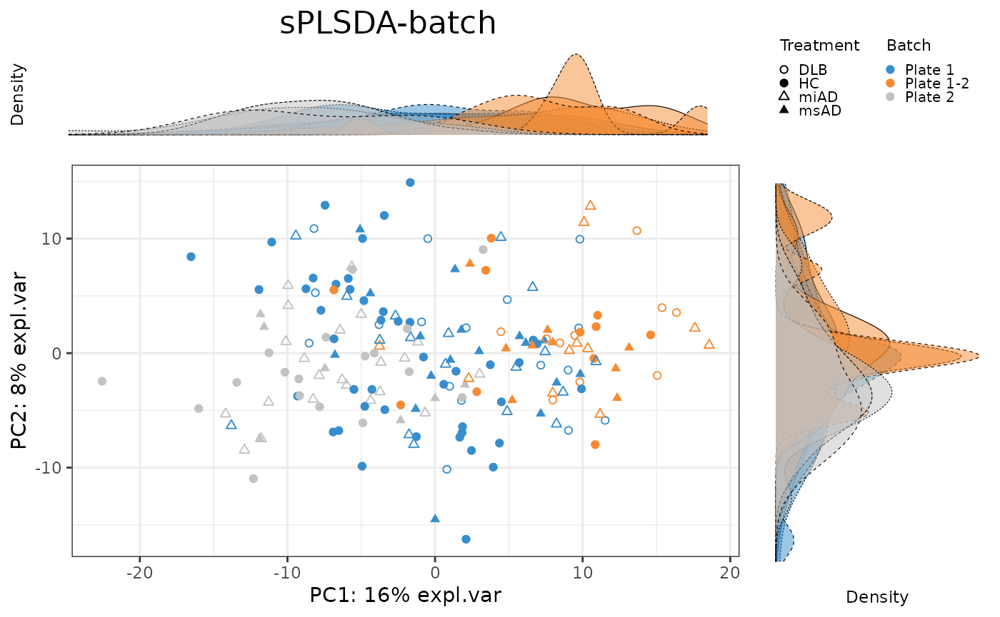
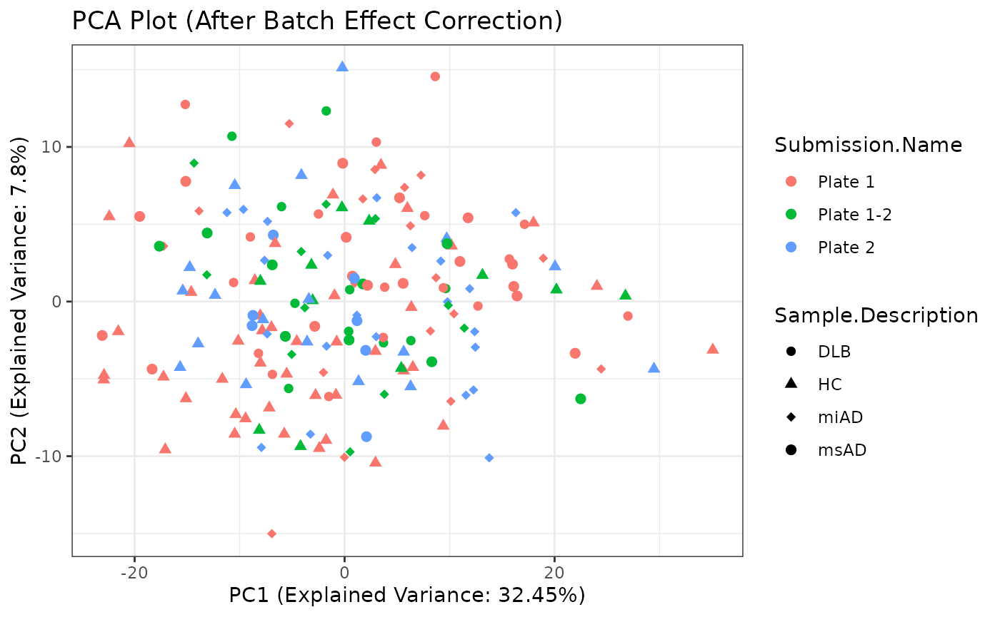

Data Processing Phase 2 Report
Source:vignettes/dataProcessing_phase_2.Rmd
dataProcessing_phase_2.RmdIntroduction
This report focuses on the data processing steps involved in phase 2. It encompasses filtering the data, transforming it using Compositional Log-Ratio (CLR) transformation, assessing batch effects, and applying batch correction methods such as removeBatchEffect, ComBat, PLSDA-batch, sPLSDA-batch, and percentile normalization.
Setup
In this section, we set up the necessary libraries and configurations for the data processing tasks.
Data Loading
categories <- dataPreparation::imputed_data$categories
imputed_data <- dataPreparation::imputed_dataPreparing Data for Analysis
We begin by filtering the data using the PreFL()
function from the PLSDAbatch package to remove features with zero
variance. This step is crucial for reducing noise and improving the
quality of the dataset.
# Filter the data
filter.res <- PLSDAbatch::PreFL(data = imputed_data$data,
keep.spl = 0,
keep.var = 0.00)
filter <- filter.res$data.filter
# Calculate zero proportion before filtering
filter.res$zero.prob
#> [1] 0.1164276
# Calculate zero proportion after filtering
sum(filter == 0) / (nrow(filter) * ncol(filter))
#> [1] 0.1164276Transforming Data
Next, I transform the filtered data using the CLR transformation method from the mixOmics package. This transformation is essential for handling compositional data and preparing it for further analysis.
# Perform CLR transformation
clr <- mixOmics::logratio.transfo(X = filter, logratio = 'CLR', offset = 1)
class(clr) = 'matrix'Assessing Batch Effects
Before applying batch correction methods, we assess batch effects in the data using principal component analysis (PCA) and variance partitioning analysis (pRDA). Understanding the sources of variation in the data is crucial for selecting appropriate batch correction techniques.
# Perform PCA
pca.before <- mixOmics::pca(clr, ncomp = 4, scale = TRUE)
batch = factor(categories$Submission.Name, levels = unique(categories$Submission.Name))
descr = as.factor(categories$Sample.Description)
names(batch) <- names(descr) <- rownames(categories)
# Perform pRDA
factors.df <- data.frame(trt = descr, batch = batch)
rda.before <- vegan::varpart(clr, ~ descr, ~ batch,
data = factors.df,
scale = TRUE)
rda.before$part$indfract
#> Df R.squared Adj.R.squared Testable
#> [a] = X1|X2 3 NA 0.010742410 TRUE
#> [b] = X2|X1 2 NA 0.063271790 TRUE
#> [c] 0 NA 0.008237267 FALSE
#> [d] = Residuals NA NA 0.917748533 FALSEBatch Correction
I apply various batch correction methods, including
removeBatchEffect, ComBat,
PLSDA-batch, and sPLSDA-batch, to mitigate
batch effects in the data. These methods adjust for technical variation
introduced by batch processing and improve the accuracy of downstream
analysis.
# Managing batch effects
clr <- clr[seq_len(nrow(clr)), seq_len(ncol(clr))]
lm <- PLSDAbatch::linear_regres(data = clr, trt = descr,
batch.fix = batch, type = 'linear model')
p <- sapply(lm$lm.table, function(x){x$coefficients[2,4]})
p.adj <- p.adjust(p = p, method = 'fdr')
performance::check_model(lm$model$AC.0.0.)
mod <- model.matrix( ~ descr)
# Applying removeBatchEffect
rBE <- t(limma::removeBatchEffect(t(clr), batch = batch,
design = mod))
# Applying ComBat
ComBat <- t(sva::ComBat(t(clr), batch = batch,
mod = mod, par.prior = FALSE))
#> Found3batches
#> Adjusting for3covariate(s) or covariate level(s)
#> Standardizing Data across genes
#> Fitting L/S model and finding priors
#> Finding nonparametric adjustments
#> Adjusting the Data
# Applying PLSDA-batch
trt.tune <- mixOmics::plsda(X = clr, Y = descr, ncomp = 5)
trt.tune$prop_expl_var #1
#> $X
#> comp1 comp2 comp3 comp4 comp5
#> 0.26290693 0.12924845 0.05638917 0.03215048 0.02706694
#>
#> $Y
#> comp1 comp2 comp3 comp4 comp5
#> 0.3476251 0.2891150 0.3600766 0.2659962 0.2676497
ad.batch.tune <- PLSDAbatch::PLSDA_batch(X = clr,
Y.trt = descr, Y.bat = batch,
ncomp.trt = 1, ncomp.bat = 10)
ad.batch.tune$explained_variance.bat #4
#> $X
#> comp1 comp2 comp3 comp4 comp5 comp6 comp7
#> 0.14292479 0.10174322 0.04409038 0.05767321 0.02997094 0.02896939 0.03965851
#> comp8 comp9 comp10
#> 0.02523240 0.02492387 0.02929685
#>
#> $Y
#> comp1 comp2 comp3 comp4 comp5 comp6
#> 5.341427e-01 4.658573e-01 4.462800e-01 5.536993e-01 2.076144e-05 4.561109e-01
#> comp7 comp8 comp9 comp10
#> 5.438691e-01 2.002938e-05 4.534041e-01 5.465765e-01
PLSDA_batch.res <- PLSDAbatch::PLSDA_batch(X = clr,
Y.trt = descr, Y.bat = batch,
ncomp.trt = 1, ncomp.bat = 4)
PLSDA_batch <- PLSDA_batch.res$X.nobatch
# Applying sPLSDA-path
set.seed(777)
test.keepX = c(seq(1, 10, 1), seq(20, 100, 10),
seq(150, 231, 50), 231)
trt.tune.v <- mixOmics::tune.splsda(X = clr, Y = descr,
ncomp = 1, test.keepX = test.keepX,
validation = 'Mfold', folds = 4,
nrepeat = 50)
trt.tune.v$choice.keepX
#> comp1
#> 10
batch.tune <- PLSDAbatch::PLSDA_batch(X = clr,
Y.trt = descr, Y.bat = batch,
ncomp.trt = 1, keepX.trt = 100,
ncomp.bat = 10)
batch.tune$explained_variance.bat #4
#> $X
#> comp1 comp2 comp3 comp4 comp5 comp6 comp7
#> 0.14466418 0.19348074 0.03894402 0.04894104 0.03372545 0.04020103 0.01913727
#> comp8 comp9 comp10
#> 0.02467613 0.01411173 0.02207250
#>
#> $Y
#> comp1 comp2 comp3 comp4 comp5 comp6
#> 0.547906095 0.452093905 0.459599014 0.538221131 0.002179855 0.498738183
#> comp7 comp8 comp9 comp10
#> 0.499292933 0.001968885 0.524672205 0.473370097
sum(batch.tune$explained_variance.bat$Y[seq_len(4)])
#> [1] 1.99782
sPLSDA_batch.res <- PLSDAbatch::PLSDA_batch(X = clr,
Y.trt = descr, Y.bat = batch,
ncomp.trt = 1, keepX.trt = 100,
ncomp.bat = 4)
sPLSDA_batch <- sPLSDA_batch.res$X.nobatch
# Applying PN
PN <- PLSDAbatch::percentile_norm(data = clr, batch = batch,
trt = descr, ctrl.grp = '0-0.5')Evaluating Batch Correction
To evaluate the effectiveness of batch correction methods, I compare the variance explained by treatment and batch factors before and after correction. I also assess the impact of correction on the distribution of samples using scatter plots and density plots.
Selecting Features
Finally, we select features that are relevant for discrimination between treatment groups using sparse partial least squares discriminant analysis (sPLSDA). This step helps identify biomarkers or features that contribute significantly to group separation and biological interpretation.
# order batches
batch <- factor(categories$Submission.Name,
levels = unique(categories$Submission.Name))
pca.before.plot <- PLSDAbatch::Scatter_Density(object = pca.before,
batch = batch,
trt = descr,
title = 'Before correction')
pca.rBE.plot <- PLSDAbatch::Scatter_Density(object = pca.rBE,
batch = batch,
trt = descr,
title = 'removeBatchEffect')
pca.ComBat.plot <- PLSDAbatch::Scatter_Density(object = pca.ComBat,
batch = batch,
trt = descr,
title = 'ComBat')
pca.PLSDA_batch.plot <- PLSDAbatch::Scatter_Density(object = pca.PLSDA_batch,
batch = batch,
trt = descr,
title = 'PLSDA-batch')
pca.sPLSDA_batch.plot <- PLSDAbatch::Scatter_Density(object = pca.sPLSDA_batch,
batch = batch,
trt = descr,
title = 'sPLSDA-batch')
g <- ggpubr::ggarrange(pca.before.plot,
pca.rBE.plot,
pca.ComBat.plot,
pca.PLSDA_batch.plot,
pca.sPLSDA_batch.plot,
labels = c("A", "B", "C", "D", "E"),
ncol = 2, nrow = 3)
corrected.list <- list(`Before correction` = clr,
removeBatchEffect = rBE,
ComBat = ComBat,
`PLSDA-batch` = PLSDA_batch,
`sPLSDA-batch` = sPLSDA_batch
# `Percentile Normalisation` = PN,
# RUVIII = RUVIII
)
factors.df <- data.frame(trt = descr, batch = batch)
prop.df <- data.frame("Disease Pheno" = NA, Batch = NA,
Intersection = NA,
Residuals = NA)
for(i in seq_len(length(corrected.list))){
rda.res = vegan::varpart(corrected.list[[i]], ~ descr, ~ batch,
data = factors.df, scale = TRUE)
prop.df[i, ] <- rda.res$part$indfract$Adj.R.squared}
rownames(prop.df) = names(corrected.list)
prop.df <- prop.df[, c(1,3,2,4)]
prop.df[prop.df < 0] = 0
prop.df <- as.data.frame(t(apply(prop.df, 1,
function(x){x/sum(x)})))
PLSDAbatch::partVar_plot(prop.df = prop.df)other methods
d <-
dataPreparation::visualize_batch_correction(
corrected_list = corrected.list,
categories = categories,
visualization_type = "barplot"
)
d
splsda.select <- list()
for(i in seq_len(length(corrected.list))){
splsda.res <- mixOmics::splsda(X = corrected.list[[i]], Y = descr,
ncomp = 3, keepX = rep(50,3))
select.res <- mixOmics::selectVar(splsda.res, comp = 1)$name
splsda.select[[i]] <- select.res
}
names(splsda.select) <- names(corrected.list)
# can only visualize 5 methods
splsda.select <- splsda.select[seq_len(5)]
splsda.upsetR <- UpSetR::fromList(splsda.select)
p <- UpSetR::upset(splsda.upsetR, main.bar.color = 'gray36',
sets.bar.color = PLSDAbatch::pb_color(c(25:22,20)), matrix.color = 'gray36',
order.by = 'freq', empty.intersections = 'on',
queries = list(list(query = intersects,
params = list('Before correction'),
color = PLSDAbatch::pb_color(20), active = TRUE),
list(query = intersects,
params = list('removeBatchEffect'),
color = PLSDAbatch::pb_color(22), active = TRUE),
list(query = intersects,
params = list('ComBat'),
color = PLSDAbatch::pb_color(23), active = TRUE),
list(query = intersects,
params = list('PLSDA-batch'),
color = PLSDAbatch::pb_color(24), active = TRUE),
list(query = intersects,
params = list('sPLSDA-batch'),
color = PLSDAbatch::pb_color(25), active = TRUE)))Performing Principal Component Analysis (PCA After Batch Effect Correction)
Principal Component Analysis (PCA) is a dimensionality reduction technique that helps visualize the variation in the dataset. Here, I perform PCA on the preprocessed data and create a PCA plot for visualization.
t <- rBE
# Perform PCA
pca_result <- prcomp(t, scale. = TRUE, center = TRUE)
# Extract PCA scores
pca_scores <- as.data.frame(pca_result$x)
# Combine PCA scores with categories for visualization
pca_data <- cbind(pca_scores, imputed_data$categories)
# Create PCA plot
pca_plot <- ggplot2::ggplot(pca_data,
ggplot2::aes(x = PC1, y = PC2,
color = Submission.Name,
shape = Sample.Description)) +
ggplot2::geom_point(size = 2) +
ggplot2::scale_shape_manual(values = c(16, 17, 18, 19)) +
ggplot2::theme_bw() +
ggplot2::labs(
title = "PCA Plot (After Batch Effect Correction)",
x = paste0(
"PC1 (Explained Variance: ",
round(pca_result$sdev[1] ^ 2 / sum(pca_result$sdev ^ 2) * 100, 2),
"%)"
),
y = paste0(
"PC2 (Explained Variance: ",
round(pca_result$sdev[2] ^ 2 / sum(pca_result$sdev ^ 2) * 100, 2),
"%)"
)
)
# Display PCA plot
pca_plot
imputed_data$rBE <- rBE
write.csv(x = imputed_data$rBE,
file = "../inst/data_to_use/imputed_data_after_Batch_Correction.csv",
row.names = FALSE)
usethis::use_data(imputed_data, overwrite = TRUE)
#> ✔ Setting active project to '/home/runner/work/dataPreparation/dataPreparation'
#> ✔ Saving 'imputed_data' to 'data/imputed_data.rda'
#> • Document your data (see 'https://r-pkgs.org/data.html')Conclusion
In conclusion, this report highlights the importance of comprehensive data processing and batch correction techniques in ensuring the reliability and interpretability of metabolomic data. By systematically addressing batch effects and selecting informative features, I can improve the robustness f downstream analyses and enhance the understanding of biological phenomena.
This marks the end of the Data Processing Phase 2 Report.